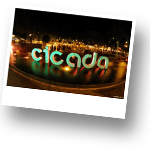
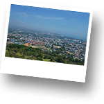
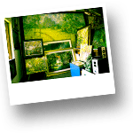
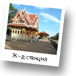
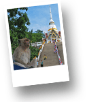
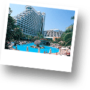
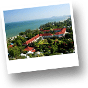
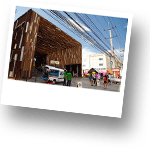
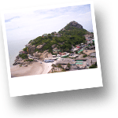

Интересные места Хуа Хина

Cicada Market
Ciсada Market – одно из самых популярный среди местных жителей и среди туристов место. Cicada Market открыт для посещения с пятницы по воскресенье вечером с 18.00 до 23.00. Здесь Вы можете погулять, отдохнуть и приятно провести время. Вашему вниманию...читать далее
Ват Хуай Мангкол
Храм Ват Хуат Монкгол посвещен крупнейшему в мире изваянию монаха Луан По Туад (Laung Poo Tuad). Луанг По Туад является одним из известных и весьма почитаемых монахов буддийского Королевства. По легенде Луанг По Туад...читать далее

Гора (холм) Khao Hin Lek Fai
Замечательные виды города Хуа Хин открываются с панорамных площадок холма Khao Hin Lek Fai. Гора расположена примерно в 3 киллометрах от центра города. Khao Hin Lek Fai имеет три обзорные плщадки. Две площадки облагорожены изгородью, а одна полностью из дикого камня. Со всех трех площадок открывается...читать далее

Деревня художников в Хуа Хине
Деревня Художников – это место, которое очень необычно для Тайланда. Очень интересное и особенно понравится людям, которые увлекаются искусством. Здесь сконцентрирована абсолютно вся творческая активность Хуа Хина.Вашему вниманию представлены работы мастеров разных жанров. В Деревне Художников проходят...читать далее

Железнодорожная станция Хуа Хина
Железнодорожная станция Хуа Хина была построена первоначально для членов королевской семьи во времена правления Короля Рамы VI. Станция представляет собой очень красивое архитектурное сооружение. Станция состояит из двух павильонов. Один из них – Королевский павильон, а второй...читать далее

Khao Takiap (Као Такиаб)
Гора обезьян Као Такиаб (Khao Takiap) – Гора Као Такиаб расположена в южной точке города Хуа Хин. Гора Као Такиаб приобрела свою популярность среди туристов благодаря огромному количеству обезьян, живущих на ее вершине. У Вас будет прекрасная возможность...читать далее

Отель Hilton
Отель Hilton построен в центральной части города Хуа Хин. Именно вокруг отеля Hilton сосредоточена ночная жизнь города – бары, рестораны, дискотеки. Отель был построен на месте одного из дворцов, принадлежащего Королю Таиланда...читать далее

Отель Sofitel Grand Centara
Отель Sofitel по праву можно охарактеризовать, как отель-музей. Sofitel был построен во время правления короля Рамы VI в 1923 году. Отель изначально строился, как отель при жлезнодорожной станции. Это первый большой отель, построенный в Хуа Хине. Sofitel построен на земле...читать далее

Ретро- маркет
В Хуа Хине есть ретро-маркет Plearnwan. Это место очень любимое тайцами. Это своего рода мини-путешествие в старый Хуа Хин. Здесь Вы сделаете много фотографий из прошлой жизни города. В Plearnwan есть магазин одежды. Еще Вы найдете очень интересный магазин, которого, пожалуй, Вы больше нигде не встретите...читать далее

Рыбацкие причалы и рыбацкая деревня
В Хуа Хине есть интересные места, где Вы можете оценить образ жизни местных жителей,которые промышляют рыбной ловлей. Рыбацкая деревня находится на юге города, у подножья горы Као Такиаб. Это место интересно тем, что именно эта рыбацкая деревня является основным местом...читать далее